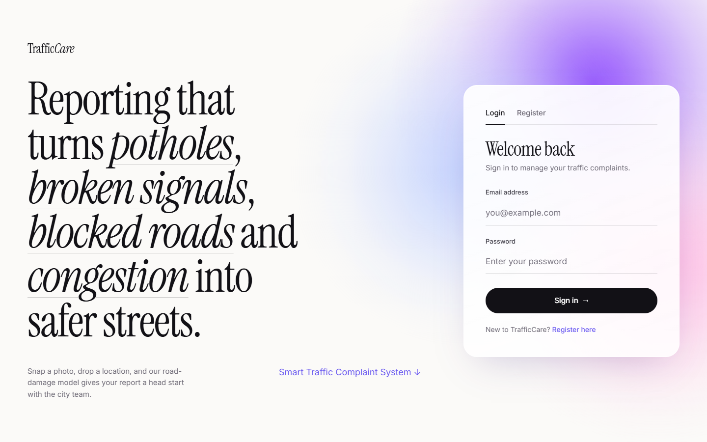
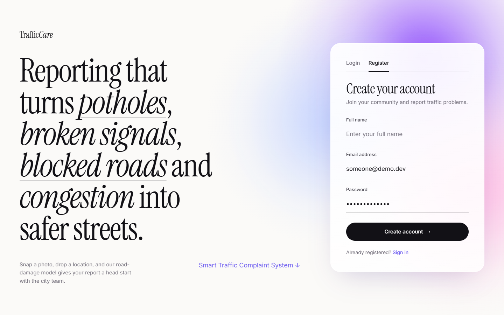
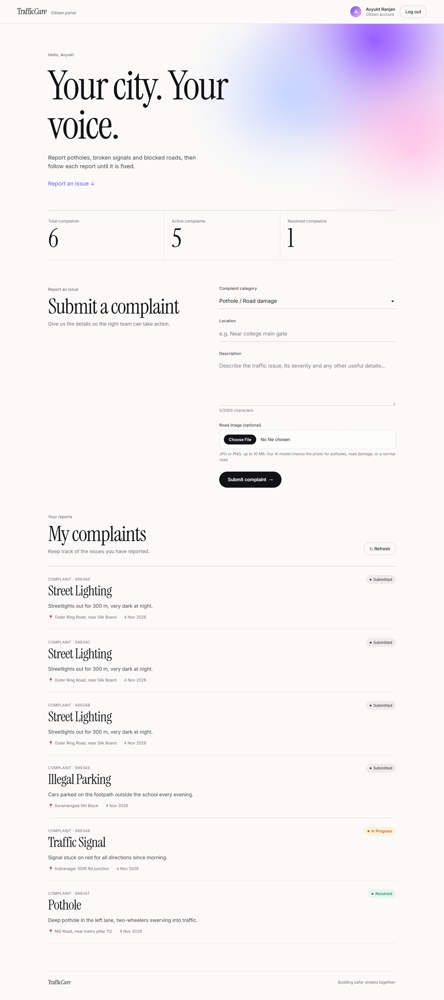
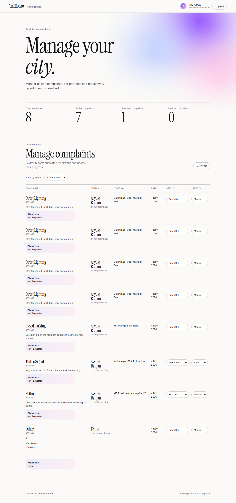

TrafficCare · screen diagram
Four screens. Arrows are the user actions (and system events) that move between them. Dashed = automatic / error path.
Open app → saved session? → straight to the dashboard for that role

S1LoginEmail + password · role-based redirect · error alert on bad credentials

S2RegisterName, email, password (8+ chars) · every new account is a citizen

S3Citizen dashboardStats · submit complaint + photo (AI analysis) · track own complaints

S4Admin dashboardAll complaints · filter by status · set status & priority